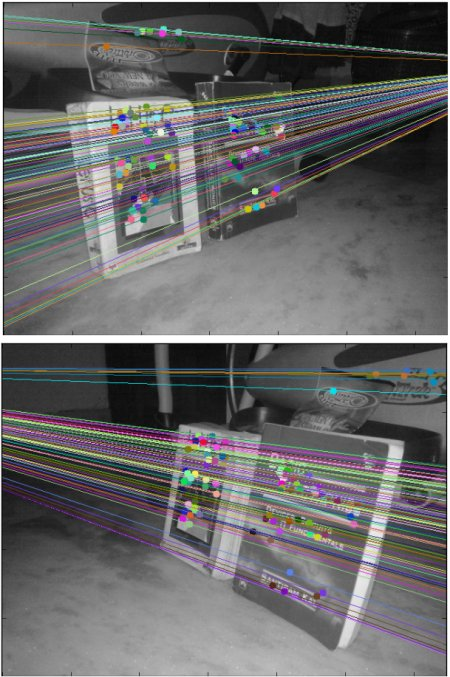

Epipolar Geometry
Goal
In this section,
- We will learn about the basics of multiview geometry
- We will see what is epipole, epipolar lines, epipolar constraint etc.
Basic Concepts
When we take an image using pin-hole camera, we loose an important information, ie depth of the image. Or how far is each point in the image from the camera because it is a 3D-to-2D conversion. So it is an important question whether we can find the depth information using these cameras. And the answer is to use more than one camera. Our eyes works in similar way where we use two cameras (two eyes) which is called stereo vision. So let’s see what OpenCV provides in this field.
(Learning OpenCV by Gary Bradsky has a lot of information in this field.)
Before going to depth images, let’s first understand some basic concepts in multiview geometry. In this section we will deal with epipolar geometry. See the image below which shows a basic setup with two cameras taking the image of same scene.

If we are using only the left camera, we can’t find the 3D point corresponding to the point \(x\) in image because every point on the line \(OX\) projects to the same point on the image plane. But consider the right image also. Now different points on the line \(OX\) projects to different points (\(x'\)) in right plane. So with these two images, we can triangulate the correct 3D point. This is the whole idea.
The projection of the different points on \(OX\) form a line on right plane (line \(l'\)). We call it epiline corresponding to the point \(x\). It means, to find the point \(x\) on the right image, search along this epiline. It should be somewhere on this line (Think of it this way, to find the matching point in other image, you need not search the whole image, just search along the epiline. So it provides better performance and accuracy). This is called Epipolar Constraint. Similarly all points will have its corresponding epilines in the other image. The plane \(XOO'\) is called Epipolar Plane.
\(O\) and \(O'\) are the camera centers. From the setup given above, you can see that projection of right camera \(O'\) is seen on the left image at the point, \(e\). It is called the epipole. Epipole is the point of intersection of line through camera centers and the image planes. Similarly \(e'\) is the epipole of the left camera. In some cases, you won’t be able to locate the epipole in the image, they may be outside the image (which means, one camera doesn’t see the other).
All the epilines pass through its epipole. So to find the location of epipole, we can find many epilines and find their intersection point.
So in this session, we focus on finding epipolar lines and epipoles. But to find them, we need two more ingredients, Fundamental Matrix (F) and Essential Matrix (E). Essential Matrix contains the information about translation and rotation, which describe the location of the second camera relative to the first in global coordinates. See the image below (Image courtesy: Learning OpenCV by Gary Bradsky):

But we prefer measurements to be done in pixel coordinates, right? Fundamental Matrix contains the same information as Essential Matrix in addition to the information about the intrinsics of both cameras so that we can relate the two cameras in pixel coordinates. (If we are using rectified images and normalize the point by dividing by the focal lengths, \(F=E\)). In simple words, Fundamental Matrix F, maps a point in one image to a line (epiline) in the other image. This is calculated from matching points from both the images. A minimum of 8 such points are required to find the fundamental matrix (while using 8-point algorithm). More points are preferred and use RANSAC to get a more robust result.
Code
So first we need to find as many possible matches between two images to find the fundamental matrix. For this, we use SIFT descriptors with FLANN based matcher and ratio test.
import cv2 import numpy as np from matplotlib import pyplot as plt img1 = cv2.imread('myleft.jpg',0) #queryimage # left image img2 = cv2.imread('myright.jpg',0) #trainimage # right image sift = cv2.SIFT() # find the keypoints and descriptors with SIFT kp1, des1 = sift.detectAndCompute(img1,None) kp2, des2 = sift.detectAndCompute(img2,None) # FLANN parameters FLANN_INDEX_KDTREE = 1 index_params = dict(algorithm = FLANN_INDEX_KDTREE, trees = 5) search_params = dict(checks=50) flann = cv2.FlannBasedMatcher(index_params,search_params) matches = flann.knnMatch(des1,des2,k=2) good = [] pts1 = [] pts2 = [] # ratio test as per Lowe's paper for i,(m,n) in enumerate(matches): if m.distance < 0.8*n.distance: good.append(m) pts2.append(kp2[m.trainIdx].pt) pts1.append(kp1[m.queryIdx].pt)
Now we have the list of best matches from both the images. Let’s find the Fundamental Matrix.
pts1 = np.int32(pts1) pts2 = np.int32(pts2) F, mask = cv2.findFundamentalMat(pts1,pts2,cv2.FM_LMEDS) # We select only inlier points pts1 = pts1[mask.ravel()==1] pts2 = pts2[mask.ravel()==1]
Next we find the epilines. Epilines corresponding to the points in first image is drawn on second image. So mentioning of correct images are important here. We get an array of lines. So we define a new function to draw these lines on the images.
def drawlines(img1,img2,lines,pts1,pts2): ''' img1 - image on which we draw the epilines for the points in img2 lines - corresponding epilines ''' r,c = img1.shape img1 = cv2.cvtColor(img1,cv2.COLOR_GRAY2BGR) img2 = cv2.cvtColor(img2,cv2.COLOR_GRAY2BGR) for r,pt1,pt2 in zip(lines,pts1,pts2): color = tuple(np.random.randint(0,255,3).tolist()) x0,y0 = map(int, [0, -r[2]/r[1] ]) x1,y1 = map(int, [c, -(r[2]+r[0]*c)/r[1] ]) img1 = cv2.line(img1, (x0,y0), (x1,y1), color,1) img1 = cv2.circle(img1,tuple(pt1),5,color,-1) img2 = cv2.circle(img2,tuple(pt2),5,color,-1) return img1,img2
Now we find the epilines in both the images and draw them.
# Find epilines corresponding to points in right image (second image) and # drawing its lines on left image lines1 = cv2.computeCorrespondEpilines(pts2.reshape(-1,1,2), 2,F) lines1 = lines1.reshape(-1,3) img5,img6 = drawlines(img1,img2,lines1,pts1,pts2) # Find epilines corresponding to points in left image (first image) and # drawing its lines on right image lines2 = cv2.computeCorrespondEpilines(pts1.reshape(-1,1,2), 1,F) lines2 = lines2.reshape(-1,3) img3,img4 = drawlines(img2,img1,lines2,pts2,pts1) plt.subplot(121),plt.imshow(img5) plt.subplot(122),plt.imshow(img3) plt.show()
Below is the result we get:
You can see in the left image that all epilines are converging at a point outside the image at right side. That meeting point is the epipole.
For better results, images with good resolution and many non-planar points should be used.
Additional Resources
Exercises
- One important topic is the forward movement of camera. Then epipoles will be seen at the same locations in both with epilines emerging from a fixed point. See this discussion.
- Fundamental Matrix estimation is sensitive to quality of matches, outliers etc. It becomes worse when all selected matches lie on the same plane. Check this discussion.